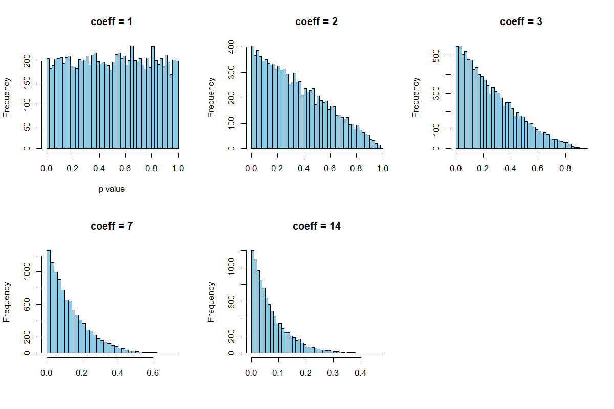
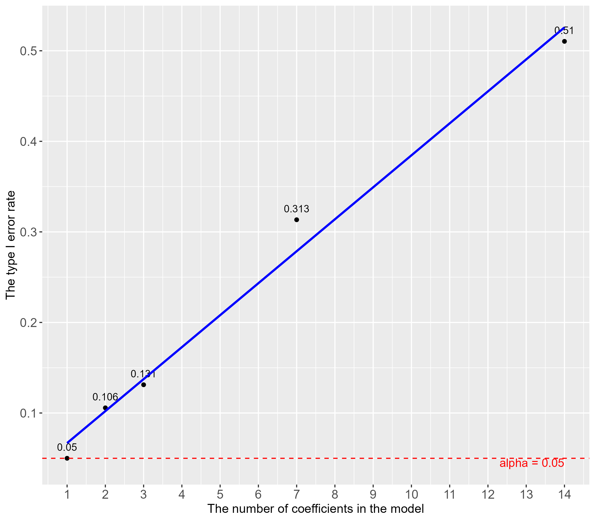

Call:
lm(formula = mpg ~ vs + wt, data = mtcars)
Residuals:
Min 1Q Median 3Q Max
-3.7071 -2.4415 -0.3129 1.4319 6.0156
Coefficients:
Estimate Std. Error t value Pr(>|t|)
(Intercept) 33.0042 2.3554 14.012 1.92e-14 ***
vs 3.1544 1.1907 2.649 0.0129 *
wt -4.4428 0.6134 -7.243 5.63e-08 ***
---
Signif. codes: 0 '***' 0.001 '**' 0.01 '*' 0.05 '.' 0.1 ' ' 1
Residual standard error: 2.78 on 29 degrees of freedom
Multiple R-squared: 0.801, Adjusted R-squared: 0.7873
F-statistic: 58.36 on 2 and 29 DF, p-value: 6.818e-11帰無仮説検定をもとにした回帰分析の検定の多重性について
メソドロジー研究部会 2025年度第1回研究会
寺井雅人 (愛知工科大学)
09-07-2025
自己紹介
- X: @uniquefreshman
- 所属：愛知工科大学（2023–）
- 研究分野：心理言語学、外国語教育
- 単語・コロケーションの記憶保持、処理過程
- 言語知識の身体性
- 動機づけ
- TBLT
- 単語・コロケーションの記憶保持、処理過程

メソ研での発表は初！
昨年論文を掲載していただきました
- GitHubに関する論文も準備中です
帰無仮説検定
ネイマン=ピアソン理論
母数についての推定を行う
帰無仮説が正しいと仮定をし、検定統計量の標本分布（帰無分布）での確率をもとに帰無仮説を検証
棄却域が占める割合を有意水準とし、その棄却域に検定統計量が入れば、帰無仮説を棄却し、対立仮説を採択する
二つの過誤

image source: https://www.statisticssolutions.com/to-err-is-human-what-are-type-i-and-ii-errors/
二つの過誤
第一種の過誤：帰無仮説が真なのに、誤って偽だと主張すること
- 有意水準 α と一致
第二種の過誤：帰無仮説が偽なのに、それを偽であると言えない（保留）すること
検定の多重性
複数の帰無仮説を同時に検定すると、第一種の過誤のリスクが増加
例えば、有意水準を \(\alpha = 0.05\) として、3つの独立な検定を行う場合：
- 各検定で帰無仮説が正しいと仮定すると、すべての検定で帰無仮説が保留される確率は
\[ (1 - \alpha)^3 = (1 - 0.05)^3 \approx 0.857 \]
- よって、少なくとも1つの検定で誤って帰無仮説が棄却される確率は
\[ 1 - (1 - \alpha)^3 \approx 1 - 0.857 = 0.143 \]
つまり
回帰モデル内の係数の数も、同時に検証する帰無仮説の数に対応していて、2つ以上の係数は第一種の過誤のリスクを増大させてる？！
回帰分析
回帰分析
F 検定：モデルの当てはまりのよさ
- 帰無仮説：「母集団におけるモデル全体としての説明力がゼロ」 × 1回
t 検定：各独立変数と従属変数の関係
帰無仮説：「その説明変数 ( x ) の回帰係数はゼロ」 × 独立変数の数
帰無仮説：「切片はゼロ」 × 1回
シミュレーションで検証してみた
シミュレーションの方法
帰無仮説が正しいデータを作成
回帰分析を1万回行い、p 値を記録
1万個の p 値の平均が0.05よりも下回っているかを確認
仮説：係数の数 > 1だと、帰無仮説検定を > 1回行うことになる。従って、第一種の過誤の割合が増加する。
分析コード
Note
RのコードはGithubに置いています。高い計算負荷を要求されるので注意。
- 共通の設定
```{r}
set.seed(123) # 再現性確保
n_sim <- 10000 # シミュレーション回数
n_per_group <- 150 # 各グループのサンプルサイズ
alpha <- 0.05 # 有意水準
```- 例）1要因2水準モデル
```{r}
results_1factor2 <- replicate(n_sim, {
A <- factor(rep(c("X", "Y"), each = n_per_group)) # 2水準
y <- rnorm(2 * n_per_group, mean = 0, sd = 2) # 帰無仮説が正しい
model <- lm(y ~ A) # 線形回帰
coef_count_excl_intercept <- length(coef(model)) - 1 # 切片を除いた係数の数を保存
p_value <- summary(model)$coefficients[2, 4] # p値を保存
c(p_value, coef_count_excl_intercept)
})
# 結果をデータフレームに変換
results_df_1factor2 <- data.frame(
p_value = results_1factor2[1, ], # p値
coef_count = results_1factor2[2, ] # 切片を除いた係数の数
)
```- 保存した1万個のp 値が0.05になっているかを確認
分析コード
- 3水準以上だと係数が複数になるため、係数の中で一番小さい p 値のみを格納
```{r}
results_2factor2 <- replicate(n_sim, {
A <- factor(rep(rep(c("X", "Y"), each = n_per_group/2), 2))
B <- factor(rep(c("M", "N"), each = 2 * n_per_group/2))
y <- rnorm(2 * n_per_group, mean = 0, sd = 2)
model <- lm(y ~ A + B)
coef_count_excl_intercept <- length(coef(model)) - 1
anova_p <- summary(model)$coefficients[-1, 4]
min_p <- min(anova_p) # 最小のp値のみを格納
c(min_p, coef_count_excl_intercept)
})
results_df_4 <- data.frame(
p_value = results_2factor2[1, ],
coef_count = results_2factor2[2, ]
)
```作成したモデルとその係数の数
- すべてのモデルにおいて、サンプル数は300
| モデルの内容 | 係数 |
|---|---|
| 1要因（2水準） | 1 |
| 2要因（いずれも2水準） | 2 |
| 2要因（2水準と3水準、交互作用なし） | 3 |
| 1要因（2水準）＋連続変数6つ | 7 |
| 1要因（2水準）＋連続変数13つ | 14 |
シミュレーション結果
モデルの最小 p 値と係数の数
p 値と係数の数
どうしよう
p 値を補正する？
Rの関数で簡単にできる。
- ボンフェロー二補正など (Mundfrom et al., 2006)
p.adjust()関数の例
言語研究の実情
自分自身も含めて（小声）、補正自体を行っている研究は少ない？
現状把握している、補正を行っている研究
Michel, M., Murakami, A., Alexopoulou, T., & Meurers, D. (2019). Effects of task type on morphosyntactic complexity across proficiency. Instructed Second Language Acquisition, 3(2), 124-152.
Nahatame, S. (2021). Text readability and processing effort in second language reading: A computational and eye‐tracking investigation. Language learning, 71(4), 1004-1043.
Passoni, E., de Leeuw, E., & Levon, E. (2022). Bilinguals produce pitch range differently in their two languages to convey social meaning. Language and speech, 65(4), 1071-1095.
階層モデルを使う？
- 階層モデルがもたらす縮約（shrinkage）の効果
Note
縮約：各グループの極端な推定値が、全体の平均値（プーリングされた平均）に引き寄せられる現象を指す。この効果により、サンプル数が少ないグループや外れ値の影響が軽減され、より頑健で一般化可能な推定が可能になる
- p 値の補正よりも推奨されている（e.g., Garcia, 2025）
ベイズ統計を行う？
帰無仮説検定ではなくなるので、第一種の過誤の問題はなくなる
（階層）ベイズで事前分布の活用により縮約の恩恵も受けられる
それで全部解決？
階層モデル
- 混合効果モデル（ランダム切片のみ）
ベイズモデル（階層ではない）
95%信用区間に0を含む結果が正しいデータに対し、回帰分析を100回行い、95%信用区間に0を含んでない割合を記録。
Value列はその割合
つまり
有意か非有意かの2値判断の場合、まぐれ当たりのリスクは階層モデルであろうが完全には消えないのでは！？
ベイズ統計でも二値判断を行う解釈の場合（e.g., 信用区間に0を含まない = Significant ）偶然の発見の過大解釈のリスクはゼロにはできない！？
我々は統計的推測を行っている
統計的推測は不確実性を含む
- 母平均が0でも、標本平均はばらつく
```{r}
set.seed(123)
mean(rnorm(10000, mean = 0, sd = 2))
mean(rnorm(10000, mean = 0, sd = 2))
mean(rnorm(10000, mean = 0, sd = 2))
mean(rnorm(10000, mean = 0, sd = 2))
mean(rnorm(10000, mean = 0, sd = 2))
```[1] -0.004743404[1] -0.01821291[1] -0.01419882[1] -0.01048952[1] 0.03020825つまり
（頻度、ベイズなど関係なく）統計的に推測を行うのであれば、まぐれ当たりは避けられない
- p 値の補正、階層モデル、事前分布の活用など、対処法がそれぞれある
できるだけ探索的な回帰分析をやらない
研究課題・仮説に関係のある特定の係数のみを解釈する
- 共変量などモデルの全独立変数の係数の有意性を議論するのを避ける
最後に
係数の数が増えると、まぐれ当たり（第一種の過誤）の割合が増える可能性を理解しておく
それがこの分野でどの程度の問題を引き起こしているかは僕の中で未知数です
- だから追試も必要？
回帰分析を行う際はモデルと研究課題の関係を理解しておく
お願い
この話題に関する論文や本などで知っているものがあれば是非教えてください。
謝辞
- バーミンガム大学の村上明先生ならびに筑波大学の名畑目真吾先生には構想段階で貴重なアドバイスを沢山いただいたり、資料を共有していただきました。誠にありがとうございました。もちろん本発表内容の責任は全て寺井雅人にあります。もし誤っている点などがあれば全て寺井の責任です。
What do you think?

引用文献
Garcia, G. D. (2025). Bayesian estimation in multiple comparisons. Studies in Second Language Acquisition, 1–27.
Michel, M., Murakami, A., Alexopoulou, T., & Meurers, D. (2019). Effects of task type on morphosyntactic complexity across proficiency. Instructed Second Language Acquisition, 3(2), 124-152.
Mundfrom, D. J., Perrett, J. J., Schaffer, J., Piccone, A., & Roozeboom, M. (2006). Bonferroni adjustments in tests for regression coefficients. General Linear Model Journal, 32(1), 1-6.
Nahatame, S. (2021). Text readability and processing effort in second language reading: A computational and eye‐tracking investigation. Language learning, 71(4), 1004-1043.
Passoni, E., de Leeuw, E., & Levon, E. (2022). Bilinguals produce pitch range differently in their two languages to convey social meaning. Language and speech, 65(4), 1071-1095.